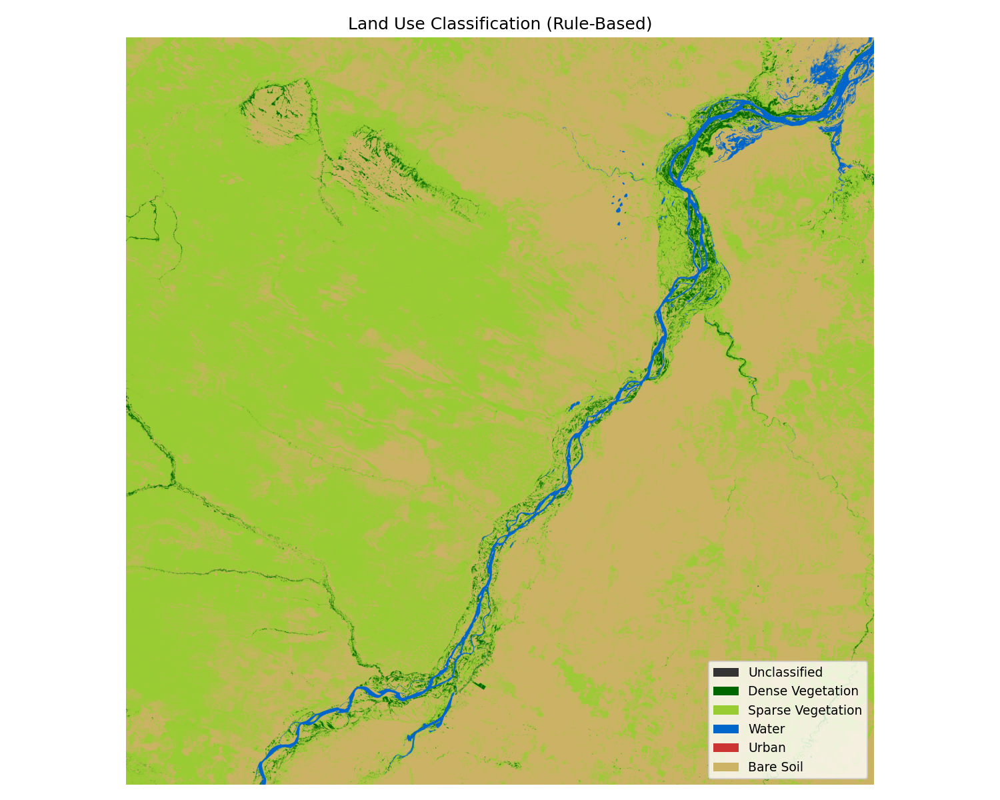

Environmental and Sanitary Engineer with an MSc in Sanitation from UFRJ. Currently a PhD candidate in Energy and Environment at UFBA, combining geospatial analysis and Python programming to develop data-driven solutions for environmental challenges.
View ProjectsRule-based land cover classification pipeline using Sentinel-2 multispectral bands. Computes NDVI, NDWI and BRI spectral indices to map Dense Vegetation, Sparse Vegetation, Water, Urban and Bare Soil classes over large geographic areas. Exports georeferenced GeoTIFF results with per-class statistics.
View on GitHub
Automated the calculation of land cover type distribution across urban drainage contribution basins using QGIS processing tools. Generates georeferenced polygon files and computes area percentages per basin — drastically reducing manual calculation time for large drainage study areas.
Automated the computation of mean runoff coefficients for urban drainage contribution basins using Python on Google Colab. Reads land cover percentages per basin and applies weighted average calculations based on user-defined runoff coefficient tables.
View on GitHub
PhD candidate in Energy and Environment at UFBA,
with an MSc in Sanitation from UFRJ.
Open to collaborations, research partnerships,
and challenging projects in env